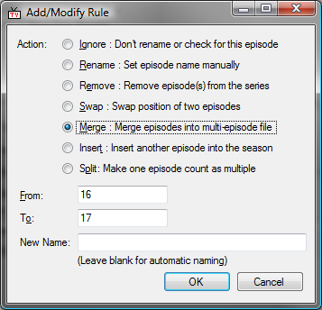

Note: This user guide is written based on the older, 2.0, version of the software. Most of the features are the same, or similar. The main changes have been to how you enter in your shows ("Shows and Folders"), and the use of thetvdb.com as the database - rather than tv.com.
If you need any further help, sign up to the forums and post a message there.
Contents
Introduction
First we'll start with what you're going to end up with. This shows a number of shows we are currently watching. The first four in the list have aired, and the first two of those are on disk locally. We can also see what's coming up in the next few days, and further ahead. There is a episode summary for the currently selected episode, and a calendar showing when shows are airing. At the very bottom, in the status bar, is a countdown to the next show that is airing.

Beginner's Overview
The first time you use this program, you will probably be wanting to do one of the following two things:
(1) Get an existing collection of shows under control. In this case, I'd start with the "Folder Monitor" (or "Shows and Folders"), followed by "Rename", then "Missing Check", and "Finding and Organising". If you have a lot of shows, choose "Update Codes" from the "Tools" menu before you start.
(2) Set up new shows you want to keep track of. For this, add shows to "Shows and Folders", then do a "Missing Check", and/or visit the "When to Watch" tab.
Whatever manipulation TVRename does to your files, it will never change the season or episode number. If the names get screwed up, the season and episode number will be unchanged, meaning that the problem should be (fairly easily) fixable after changing some settings, or adding new rules. At least, that's the theory. :)
Tips and Tricks
Shows and Folders
This is where you tell TV Rename which shows you are interested in, and where they are stored on your computer. It can be a local drive, or a mapped network share.In this image, you can see a number of shows, each of which can have zero, one, or more folders associated with it.

In the top half of the screen, from left to right:
Show - The show's name.
Season - The season.
tv.com code - As data is taken from tv.com, this is their code/reference number for the show. TVRename will help you find this easily.
Show next airdate - If you want to see this show listed on the "When to Watch" tab.
Ignore - Whether or not we ignore Pilots, Specials, or Movies. This is discussed further in the "Add/Edit Show" section.
Rules - If there are any rules applied to manipulate the data from tv.com to suit how you want to number and group your episodes.
Folders - The number of folders on your computer that have this show in it.
Old - A show marked as "Old" won't have its data repeatedly downloaded from tv.com, after it is cached for the first time.
Buttons for the top half:
Add - Add a new show to the list. Remember to add folders to it separately if you need to monitor them it on disk as well. You don't need to add a folder if you only want its airdate to show up on the "When to Watch" tab.
Edit - Edit the currently selected show.
Remove - Remove the currently selected show(s).
Visit tv.com - Visit the tv.com page for this season of this show.
After clicking on a show in the top half, the bottom half becomes useful. From left to right:
Folder - The folder on your computer that this show is in.
Check Type - Whether or not we check for missing episodes, etc. This is covered more in the "Add/Edit Folder" section.
Naming Style - How you like your shows to be named. The default is set in the Preferences dialog, but can be individually overridden for individual folders.
Buttons for the bottom half:
Add - Add a new folder to the currently selected show.
Edit - Edit the selected folder's details.
Remove - Remove the selected folder(s).
Open - Open in Windows Explorer the current folder.
Add/Edit Show
Clicking on the "Add" or "Edit" button for a show, in the "Shows and Folders" tab, opens this dialog.
 |  |
In this example, we are setting up TVRename for the show "Grey's Anatomy", season 4.
The first thing is entering the tv.com code. If you know it, you can type it in directly. Otherwise, type part of the show's name (e.g. "Grey"). If it still doesn't show, click on "Search" and TVRename will search for what you typed on tv.com. Downloaded results from searching are cached locally for future use.
You can pre-load the cache for tv.com codes by using the "Update Codes" option on the "Tools" menu. This will download from TVRename's website data for about 14000 shows, but it is only updated very infrequently.
The show name is what you like to call the show yourself. You may like to remove "The" from names, or extra info like the year that tv.com puts on some shows. If you click Copy, it will keep it the same as tv.com's naming.
You enter the season number into the season field. The timezone is the timezone that the airdate times on the tv.com summary page are in. Most shows are Eastern USA timezone, but British shows (e.g. Jekyll) will be British Standard Time. This only has an effect on the "When to Watch" display, which then translates those times into your computer's timezone.
Show next airdate chooses if this show will appear in the "When to Watch" tab. tv.com also can include pilots, specials, and TV movies in their episode guide. If you don't check these three checkboxes, they will be ignored completely. If you check the checkbox, it will be counted as an episode. For example, Mythbusters often counts a special as an episode.
The Old option means that once data is downloaded from tv.com, and locally cached, it will never be downloaded again. (See the "Mark Old Shows" dialog, too.) Otherwise, TVRename re-downloads data from tv.com for a show depending on how long it was since the last episode, and if the next episode's airdate is known.
The rules section lets you manipulate the tv.com episode guide to suit how you have the episodes on your computer. The rules are applied in order, from top to bottom, it is possible to use the Up and Down buttons to re-prioritise them. Add, edit, and Delete will alter the rules list.
In this example, episodes 16 and 17 were aired as a double episode, meaning you have only one file on disk for both. The rule merges the two episodes into one. This affects the display in the "Episode Guide" tab, as well as what is checked for and how the files are renamed.
Add/Modify Rule
This is the dialog for adding or editing a rule for a show's season. Choose the operation at the top, then enter the appropriate values below.

Ignore - Keep the specified episode in the guide, but don't check for it (or rename it) on disk locally.
Rename - Manually set the name of an episode.
Remove - Make a an episode disappear. All episodes above will be renumbered down to fill the gap.
Swap - Swap the position of two episodes.
Merge - These episodes are all on disk locally as one multi-episode file.
Insert - Manually add an episode into the season. Episodes after are renumbered to accomodate it.
Split - Turn one episode into many, renumbering episode after the split to accomodate them.
After adding a rule, you can go to the "Episode Guide" tab, select the show, and then click "Refresh". You will then be able to see (and check) the effects of the rules you've created.
Add/Edit Folder
You can drag amd drop a new folder from explorer onto a line in the Shows list to add it to that show, or into the folder area below the shows. Note that you can have multiple folders for a show.
To add/edit a folder you click on the appropriate button, which displays this dialog:

The folder is the folder on your computer where this season of this show lives. The naming style chooses how you like your filenames to be, and the systemwide default (for newly added folders) can be set in the Preferences dialog.
The missing episode radiobuttons choose whether or not you want to check if you are missing episodes from your collection. no wont, all will check for everything that has aired to date, and only recent will look for episodes since the earliest one in the folder (or start of season, if you have none.)
The rename files radiobuttons choose wether or not this folder is subject to checking on the "Rename Files" tab.
The fetch button will immediately get the thumbnail for this show from tv.com, and save it in the specified folder as "folder.jpg". Clicking remove will delete the thumbnail file.
Episode Guide
Once you have set up your shows, you can visit the episode guide to see the information from tv.com, after modification by any rules you may have added.
Select the show from the combo box. If you've recently edited the show in the "shows and folders" tab, the display may be empty. In this case, click on the Refresh button.
Visit TV.com will open your web browser on the tv.com page for this season of this show. Clicking on the show name will take you to the show summary page.
The rightmost button lets you choose your preferred torrent search engine. This is used when you click on one of the "Search" links in the episode guide.
If TVRename has found the corresponding episode on disk, a watch link will be displayed. That will open the video file in the associated Windows movie player.
The episode guide also includes indication of whether or not the show has been aired, or how long until it airs. The "time to do" display is adjusted from the timezone on tv.com's page, to that of your computer.

Renaming
Click on the check button, and TVRename will, after downloading any needed information from tv.com, go through your folders and see if any files need to be renamed.
TVRename attempts to intelligently determine a show's season and episode number from it's filename, and handles most common naming styles.
A folder can be excluded from a rename check by setting rename files to no in the add/edit folder dialog, accessed from the shows and folders tab.
You can select items in the list and press the Delete key on your keyboard to remove them from the list. Once you are happy with the changes offered, click the Rename button at the bottom, and TVRename will make the changes.

Missing
This shows you where ther are gaps in your collection. Click the check button, and TVRename will look through your folders and list what you are missing.
The "arrow-down" button in the bottom left lets you choose your preferred torrent search engine. Clicking on the button in the bottom left will search for the currently selected missing episode(s) on that site. Double-clicking an item in the list will also search.

Finding and Organising
After doing a "missing" check, "finding and organising" will search, on your computer, for those missing files.
Add a number of "search folders". Either use the "Add" button, or drag and drop folders from Windows Explorer into this list. The "Open" button will open an Explorer window for the selected folder. Folders added to this list automatically have their subfolders searched.
Press the "Find" button to search for missing episodes. TVRename will list the episodes it found, and the appropriate move (on the same device) or copy (across different devices) operation to get them to where they should be. If you choose "Leave Originals", it will always copy the files to their new location.
Once you are satisfied with the list of things to do, click on "Move/Copy" and TVRename will do it.

While files are being copied and/or moved, the dialog below is shown. Press "Pause" to temporarily pause the copy/move operation. Click it again to resume. "Cancel" will stop immediately. The disk space shown is for the drive that the current file is being copied/moved to.

Folder Monitor
This is admittedly probably the most confusing, non-obvious, but most useful window there is. :)
This will monitor your media collection for new shows (folders), that TVRename hasn't seen before, and help you to quickly add them to the "Shows and Folders" tab.
Before using this, make sure your preferred renaming style is set in the preferences dialog. If this is your first time using TVRename, you might also want to choose "Update Codes" from the Tools menu, which will make things go faster later on.
Add (or drag+drop) folders to the "monitor folders" list in the top left. Click the Check button, and TVRename will recursively search for new folders. The middle list will then be filled. Using its existing cache of tv.com codes, it will automatically guess and fill in the season number and code for each folder.
Click on a show to edit it. You can then type a tv.com code, or part of a show name, to find the tv.com code in the list. If it isn't showing up, type in part of the name and press the Search button. This searches on tv.com, and will add any results to the local code cache.
After entering the code, or clicking on the show in the list, enter (or correct) the season number. Changes are immediately applied to the "New shows and folders" list. If you select multiple folders, all will be updated simultaneously.
Visit tv.com will take you to the tv.com page, so you can check it is the right show. Guess will re-guess the show details.
Clicking Remove, or pressing delete on your keyboard will remove the selected folder(s) from the list. It will be re-detected the next tiem you do a Check here. Click Ignore to add the folder to the "Ignored Folders" list. Ignore All will ignore all folders in the list.
Open will open an Explorer window in that folder. Clicking on Done will then take all the shows with tv.com codes and season numbers, and add/merge them into your shows and folders lists.
In the example here, if the user clicked "Done" then only Seinfeld would be added. The other two shows are missing either the season number, or tv.com code.

Torrent Match
The "Torrent Match" tab lets you rename files, so their names match what is in a .torrent file. This is done using the torrent hashes, so it will work on any type of file, as long as it is big enough for a partial hash to be done on it.
Choose the .torrent file, and folder of files to rename. If you choose a "Copy To" location, the files will be copied to their new names, leaving the originals intact. If it is off, then they will be renamed in place.

Currently, TVRename can only process single file torrents, and multi-file torrents without subdirectories in them.
After clicking "Go", the torrent file will be processed. This can take a while if the torrent file has a lot of items in it, or there are a lot of potential matches in the "Folder" you have selected.
If processing is successful, you will be taken to the rename or finding and orgnising tab, to see the suggested operations. Your files will only be modified if you click "Rename" or "Move/Copy" from there.

It's not possible to rename the files in (a multiple file) torrent, to match what you have on disk. Changing the names affects the hash, which makes it a different torrent from the tracker's point of view. Because of this, TVRename renames the files on disk instead.
When to Watch
For shows which have the "Show next airdate" option set, they will be listed here if tv.com has airdate information available. The time and date are adjusted to be in the timezone that you have Windows set to be.
Click on the columns to sort by them. Right-click on items to do useful related actions. For shows that have aired, an icon is shown to indicate if it is on disk (double-clicking will open it), or needs to be searched for. Double-clicking a item that isn't on disk will open the specified torrent search engine for it.
Click on the calendar to see what is airing on a particular day. Dates with shows airing are in bold. Click on a show to see its episode summary below. The refresh button will make sure that the information is up-to-date.
"Aired in the last N days" and "Next 7 days" are self-explanatory. "Later" shows the next airing episode of any show you're interested in that isn't in the next week. "Future Episodes" are all known episodes after anything in the two preceding categories.
You can turn this grouping off by clicking on the "How Long" column header, and on by clicking on "Air Date".
The "When to Watch" display is automatically refreshed from time to time, and TVRename will download in the background any updates needed from tv.com. Background downloading can be disabled from the Options menu, and will also be disabled if you're in Offline Mode.
Preferences
The filename character replacements set what to use if the episode name has a character in it that isn't allowed in a Windows filename.
The "days count as recent" specifies how many days to show for "Aired in the last N days" in the "When to Watch" tab. The "Startup tab" is what TVRename shows when you open it. The "Default Naming Style" is what is used for new folders that you add, so if you are adding a lot, set it here first!
"Use sequential number matching" will match episodes based on their overall airing order. Because this causes a lot of false matches, it is off by default. For example, Seinfeld S08E02 is the 136th episode aired, so with this option "Seinfeld - 136 - The Soul Mate.avi" will be seen at S08E02.
"Find Extensions" sets the extensions of media files to look for. Separate them each with a semicolon, don't use spaces, and make sure you put the dot in!
"RSS Export" will save a RSS-reader compatible XML file to the location you specify. It can then be read by something like XBOX Media Center, or the Vista RSS Widget. You can limit how many days or shows are written to the file. The RSS file is updated whenever the "When to watch" tab is manually or automatically refreshed.

Below is an example of the RSS output being displayed in a Vista sidebar gadget. Clicking on each item shows the episode summary information.
 |  |
Buy Me A Drink!
I'm a thirsty man, so I need lots of drinks. :)

Flush Cache
This will delete all the files in the local cache of pages downloaded from tv.com. Doing this means that on the next check, rename, or refresh, all data will be re-downloaded from tv.com.

Mark Old Shows
This lets you quickly manage which shows are old, i.e.: their data is never flushed from the cache or retrieved more than once from tv.com.
Tick the boxes, or click Auto to automatically tick any shows older than the specified time period. The age is defined as how long it has been since the last known airdate and now. Auto will not un-tick any shows.

Statistics
Just how useful has TVRename been? "Episodes on disk" is the number of episodes found the last time a "missing check" was done. "Total Episodes" is the count from the tv.com episode guide for all the shows you have.

Update Codes
This will pre-load the cache for tv.com codes by using the "Update Codes" option on the "Tools" menu. This will download from TVRename's website data for about 14000 shows, but it is only updated very very infrequently. Perhaps once or twice a year.

Files
Files on your computer that TVRename creates and uses:
%temp%\TVRenameCache
Cache of pages downloaded from tv.com. TVRename keeps this under control, deleting old files. Alternatively, you can force it to be emptied by choosing "Flush Cache" from the "Tools" menu. You can manually delete files from here, if you want, without any side effects (apart from TVRename downloading it fresh the next time it needs it.)
\Documents and Settings\<username>\Application Data\TVRename\TVRename\2.0\ (Windows XP)
\Users\<username>\AppData\Roaming\TVRename\TVRename\2.0\ (Vista)
This folder contains TVRename's settings:
The only thing saved to the registry is uninstall information, used by the "Add/Remove" control panel.